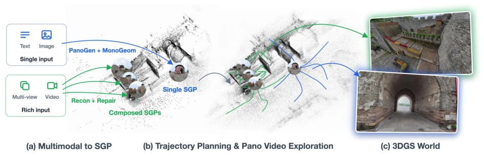
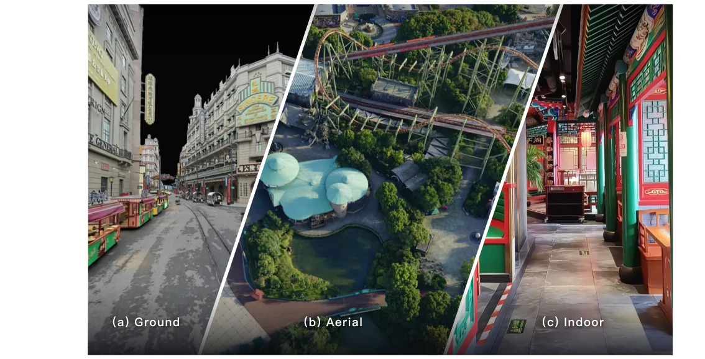
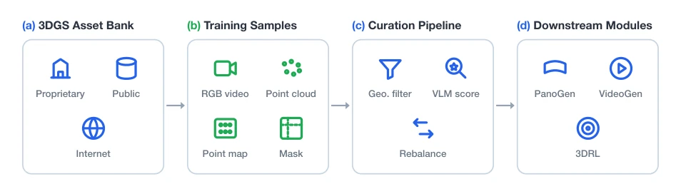
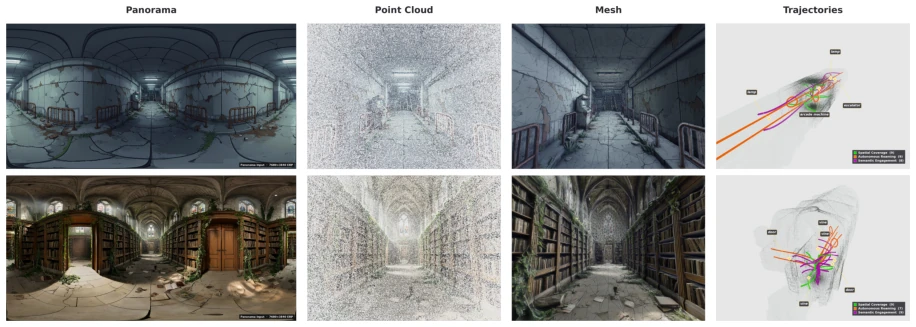
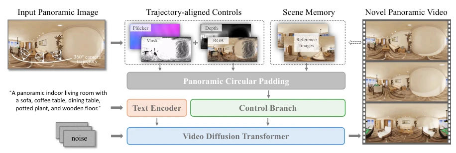
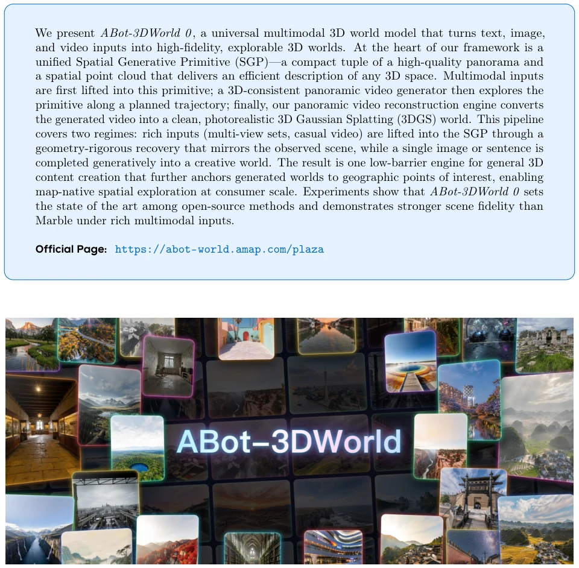
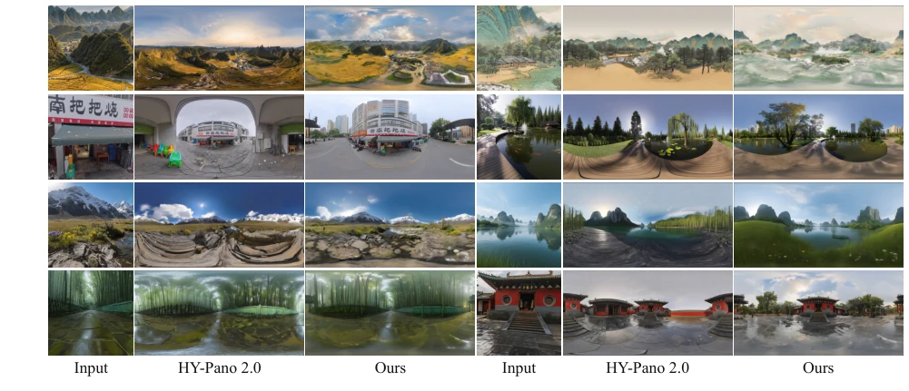
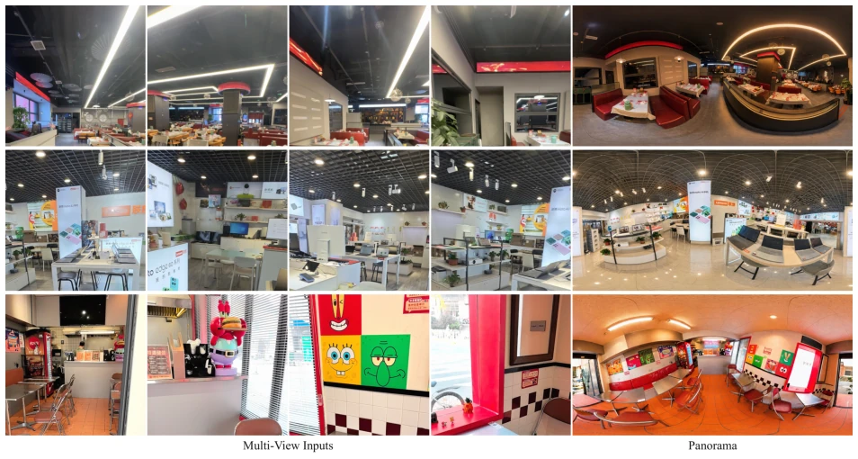
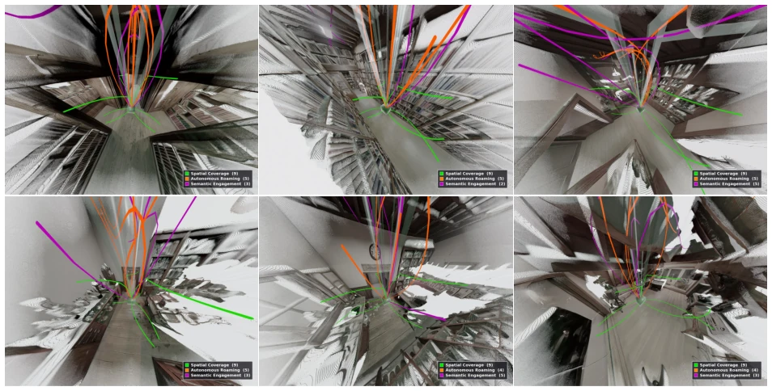
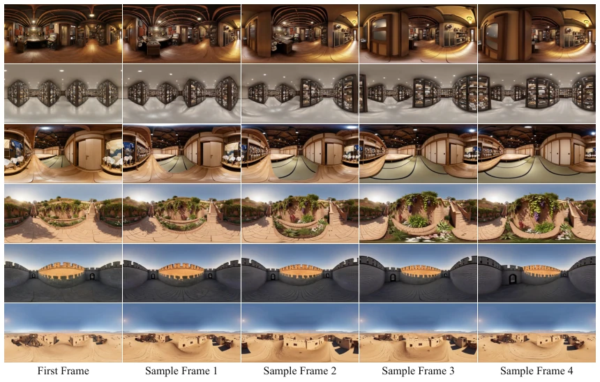

Alibaba has introduced a "universal world model" this time, claiming it can enter any 3D space at will. ABot-3DWorld 0 indeed has merit, integrating text, images, and videos into a single pipeline to finally output a 3DGS world. However, do not be misled by the term "universal"; the core still relies on the SGP (panorama + point cloud) compromise scheme, essentially reducing the 3D problem to 2D video generation + reconstruction. Running a 14B large model for panoramic video, VRAM consumption is estimated to be prohibitive. Moreover, it relies on synthetic data generated by its own ABot-3DGS; does this count as "training in isolation"? Although the performance is stronger than Marble, when it truly reaches the consumer level, can the inference cost be sustained? After all, 12 minutes per scene, can users afford to wait? However, it anchors map points of interest to geographic coordinates; this "map-native" approach is quite practical, at least more reliable than pure hallucination generation, as it can combine real geographic information.
研究动机Motivation
3D 内容创作正从物体转向场景，但场景生成难多了。现有方法如 Marble [6] 和 HY-World 2.0 [7] 虽然能生成可导航场景，但问题不少。多模态输入（如多视图）常被级联生成丢弃几何证据，导致幻觉；视频生成器多用透视视频，视野窄，覆盖效率低；训练数据缺乏对齐的 3D 真值，限制了保真度。这导致只有少数系统敢尝试全场景生成。ABot 想解决这些瓶颈，统一多模态输入，提升探索效率，保证几何一致性。特别是透视视频生成缺乏跨视图几何感知，导致视觉吸引人但 3D 不一致，这是个大坑。此外，真实全景采集有抖动和遮挡，无法提供完美对齐的几何真值，限制了模型上限。
3D content creation is shifting from objects to scenes, but scene generation is significantly more difficult. Existing methods such as Marble [6] and HY-World 2.0 [7] can generate navigable scenes, but have numerous issues. Multi-modal inputs (e.g., multi-view) are often discarded by cascaded generation, losing geometric evidence, leading to hallucinations; video generators mostly use perspective videos with narrow fields of view and low coverage efficiency; training data lacks aligned 3D ground truth, limiting fidelity. This results in only a few systems daring to attempt full scene generation. ABot aims to solve these bottlenecks, unify multi-modal input, improve exploration efficiency, and ensure geometric consistency. Specifically, perspective video generation lacks cross-view geometric perception, leading to visually attractive but 3D inconsistent results, which is a major pitfall. Additionally, real panoramic capture suffers from jitter and occlusion, unable to provide perfectly aligned geometric ground truth, limiting the model's upper bound.
The core is Spatial Generative Primitive (SGP), i.e., a compact tuple of (Panorama P, Point Cloud G). The pipeline is divided into four steps: 1. Multi-modal input to SGP, rich input undergoes geometry recovery, sparse input undergoes generation; 2. Plan exploration trajectory based on SGP point cloud, use VLM to find semantic targets; 3. Generate 3D-consistent panoramic video, use 14B VACE model, train with 3DRL; 4. Reconstruct panoramic video into 3DGS world, use FLUX for repair. The data engine is crucial, using ABot-3DGS to render synthetic data, avoiding real capture jitter and occlusion problems, ensuring training signal alignment. SGP's composability allows expansion from single room to city blocks. Panoramic video generation uses circular padding to solve seams, 3DRL uses optical flow cycle consistency reward for geometric consistency. Additionally, trajectory alignment control signals and scene memory are employed to enhance consistency. Specifically, 3DRL uses forward-backward optical flow cycle consistency as a reward, optimizing geometric consistency without explicit 3D reconstruction. The data engine renders via virtual panoramic camera, providing (RGB, point cloud map, trajectory) aligned samples, solving the problem that real panoramic capture cannot provide perfect geometric ground truth.

Figure 2 Overview of the ABot-3DWorld 0 pipeline. (a) Multimodal-to-SGP. Every input modality is lifted into a Spatial Generative Primitive (SGP); rich inputs may compose into multiple SGPs. (b) Trajectory planning and panoramic exploration. A geometry-grounded planner and a 3DRL post-trained panoramic video generator explore the SGP. (c) 3DGS world. ABot-3DGS with iterative FLUX repair reconstructs the final scene.

Figure 3 Representative panoramic samples from our proprietary dataset, reconstructed by ABot-3DGS across three scene categories: (a) ground-level urban streets, (b) aerial city views, and (c) indoor architectural interiors.

Figure 4 The ABot-3DWorld 0 data engine. (a) Multi-source assets are reconstructed into a unified 3DGS asset bank by ABot-3DGS. (b) A virtual panoramic camera renders aligned training samples (RGB video, point-cloud renderings, point maps, masks) along planned trajectories. (c) A curation pipeline filters, scores, and rebalances the clips. (d) The curated corpus supervises all downstream modules.

Figure 5 Panoramic agentic trajectory planning. Starting from a single panoramic image (left), we estimate a dense point cloud using MoGe-2 [10]. This geometric representation is then converted into a navigable 3D mesh through RecastNavigation [19]. Finally, diverse agent trajectories are planned within this reconstructed environment to satisfy specific exploration goals.

Figure 6 Panoramic video generation with trajectory-aligned controls and scene memory. Given an input panoramic image and a planned camera trajectory, we construct trajectory-aligned controls, including point-cloud RGB renderings, depth maps, point-cloud visibility masks, and camera-pose ray maps. Nearby reference panoramas from generated viewpoints are retrieved as scene memory to provide appearance and layout anchors. These signals are processed with panoramic circular padding and integrated by the control branch to guide the video diffusion transformer, producing a 3D-consistent novel panoramic video.
Sets SOTA among open-source methods, with stronger fidelity than Marble. The data engine supports indoor, street, and aerial views. Compared to HY-World 2.0, panoramic trajectory coverage is more efficient. Ablation experiments show 3DRL and FLUX repair modules are effective. However, it mainly relies on synthetic data training, and real scene generalization is not fully verified. Experiments demonstrate generation capability from single image to multi-view, and exploration videos of different scenes. Under rich input, the geometry recovery path is superior to the pure generation path, reducing hallucinations. Experiments also verify generalization capability across different scene categories (indoor, street, aerial), proving the diversity of the data engine. Although inference time is longer, the generated 3DGS world quality is higher, supporting geo-anchoring.

Figure 1 Explorable 3DGS worlds generated by ABot-3DWorld 0 from diverse inputs (text, a single image, multiview photos, or video), spanning indoor, street-level, and aerial scenes, from faithful reconstructions to fantastical creations— all produced by a single unified pipeline.

Figure 7 Single-image to panorama comparison. Each row shows, from left to right, the perspective input image, the equirectangular panorama produced by HY-Pano 2.0 [7], and the panorama produced by ABot-3DWorld 0, all generated from the same input. The two systems differ in how they extend the input’s illumination, color tone, and texture statistics across the full 360◦surround.

Figure 8 Multi-view images to panorama. Each row shows four overlapping perspective input photos of an indoor scene (top: restaurant; middle: retail showroom; bottom: appliance store) and the equirectangular 360◦panorama produced by the ABot-3DWorld 0 SGP lifting stage. The panorama recovers the full surround from sparse views without visible seams at the θ = ±180◦wrap-around, supplying the canonical appearance consumed by the downstream panoramic video generator.

Figure 9 Three exploration trajectory strategies. Spatial Coverage (green, 9 paths) systematically traverses all navigable regions through geometrically grounded sampling, ensuring comprehensive observation of occluded architectural elements (corners, doorways, ceiling structures) while maintaining optimal parallax and view overlap. Autonomous Roaming (orange, 5 paths) demonstrates adaptive navigation in unstructured environments, dynamically adjusting to geometric constraints (narrow corridors, cluttered furniture) without predefined semantic targets. Semantic Engagement (purple, 5 paths) exhibits object-centric behavior, approaching salient entities (bookshelves, display cases) at information-rich distances and viewing angles determined by vision-language queries.

Figure 10 Representative panoramic exploration videos generated by ABot-3DWorld 0 on indoor and outdoor scenes. Selected equirectangular frames along each virtual-camera trajectory exhibit coherent spatial structure, consistent frame-to-frame geometry, and fine-grained texture preservation across the full 360◦field of view.